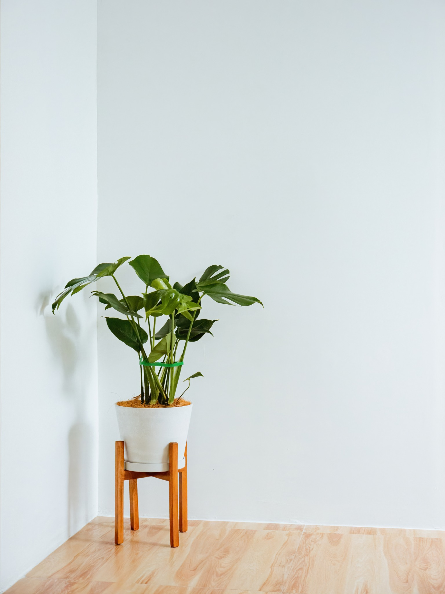
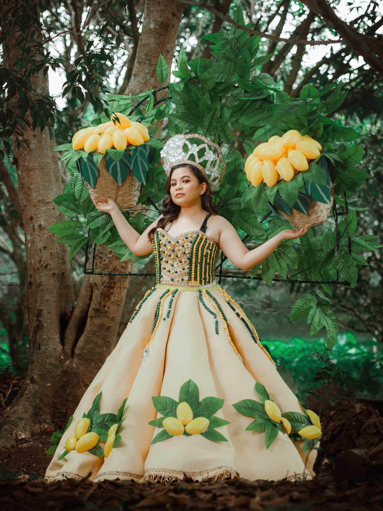

Services

Capturing the Radiant Journey: Celebrating the Blossoming Beauty of Motherhood

Roots of Renewal: Nature's Touch Brings Comfort, Where Serenity Flourishes Amidst Clean Horizons. A Symbolic Tapestry of Healing and Resilience

Adorned with the jewels of nature's treasure, she embodies the ripe essence of abundance and the allure of mango's golden symphony